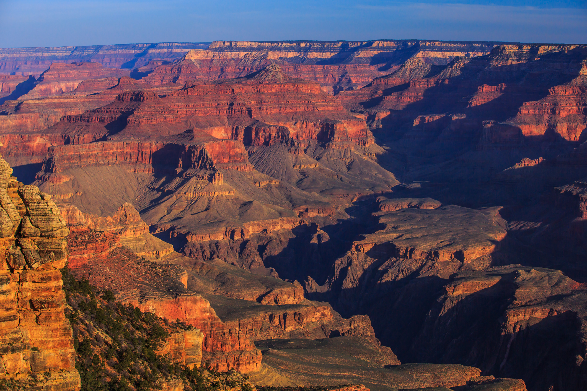
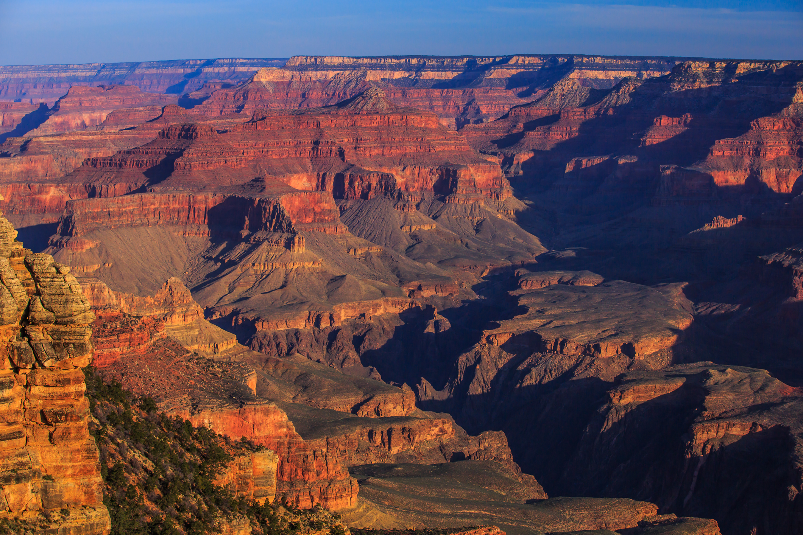

Travel
Yellowstone


Geographical Location: North America
Yellowstone is the first national park in the United States. It covers over 2.2 million acres, and provides an opportunity to see wildlife and explore geothermal areas. In fact, Yellowstone contains about half the world's active geysers.
These unique opportunities also bring out a lot of bad decisions among the tourists. Every year visitors injure themselves or the wildlife by getting close to the animals. You can see examples of people making bad decisions by visiting Yellowstone National Park: Invasion of the Idiots, Tourons of Yellowstone, or Cowboy State Daily.
Photo Gallery


Boulder


Geographical Location: Western America
Boulder, Colorado is a vibrant city nestled at the foothills of the Rocky Mountains. Known for its stunning natural beauty and outdoor recreational opportunities, Boulder offers a unique blend of urban amenities and a close connection to nature. The city is home to the University of Colorado Boulder, which contributes to its lively and intellectual atmosphere.
The city boasts an extensive network of hiking and biking trails, including the famous Flatirons, which provide breathtaking views of the surrounding landscapes. Boulder Creek, which runs through the heart of the city, offers a refreshing escape during hot summer days, with people enjoying tubing, kayaking, and picnicking along its banks.
Photo Gallery


Niagara Falls


Geographical Location: Between the United States and Canada
Niagara Falls is a world-renowned natural wonder that captivates visitors with its breathtaking beauty and thunderous roar. The falls are a magnificent display of nature's power, with millions of gallons of water cascading over the edge every minute. The most iconic of the three waterfalls is the Horseshoe Falls, named for its distinctive shape resembling a horseshoe. It is the largest and most impressive waterfall, spanning about 2,600 feet in width.
The experience of visiting Niagara Falls is truly awe-inspiring. Whether you're observing the falls from a boat tour that takes you up close to the misty spray or viewing them from the observation decks, the sheer magnitude and force of the waterfalls leave a lasting impression. The surrounding area offers various attractions and activities, including scenic hiking trails, thrilling jet boat rides, and even a chance to explore the fascinating history and geology of the falls at the Niagara Falls State Park Visitor Center.
Photo Gallery


Grand Canyon
 

Geographical Location: the United States
The Grand Canyon is a magnificent natural wonder located in the southwestern United States. Carved by the Colorado River over millions of years, it stretches for approximately 277 miles (446 kilometers) and reaches depths of over a mile (1.6 kilometers). The canyon's sheer size and intricate layers of colorful rock formations make it a truly awe-inspiring sight to behold.
Visiting the Grand Canyon offers a remarkable experience of both natural beauty and geological history. The canyon's vast expanse presents breathtaking panoramic views from various viewpoints along the rim. The contrasting hues of the rocks, ranging from deep reds to vibrant oranges and yellows, create a stunning visual spectacle at sunrise and sunset. Exploring the canyon's trails allows you to venture into its depths, revealing hidden treasures and revealing the intricate geological processes that shaped this remarkable landscape.
Photo Gallery